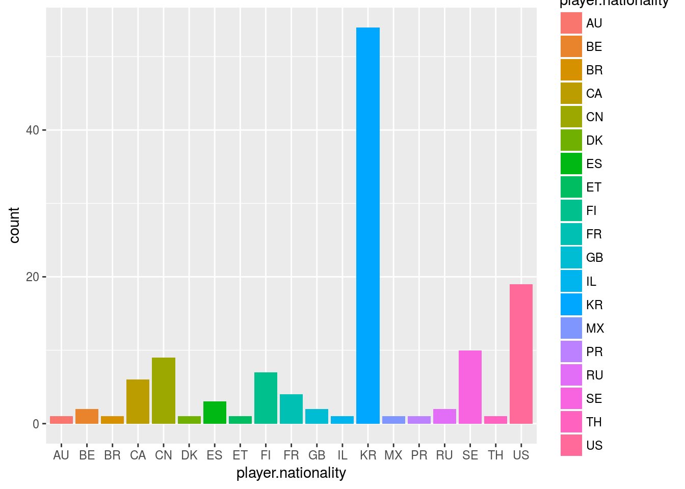
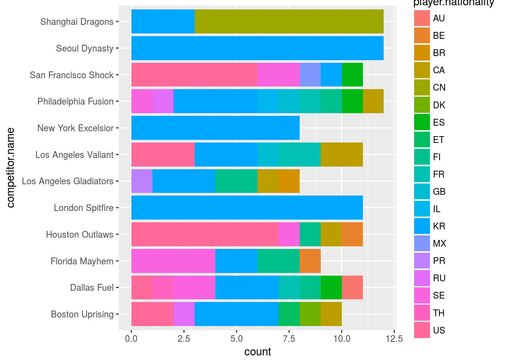
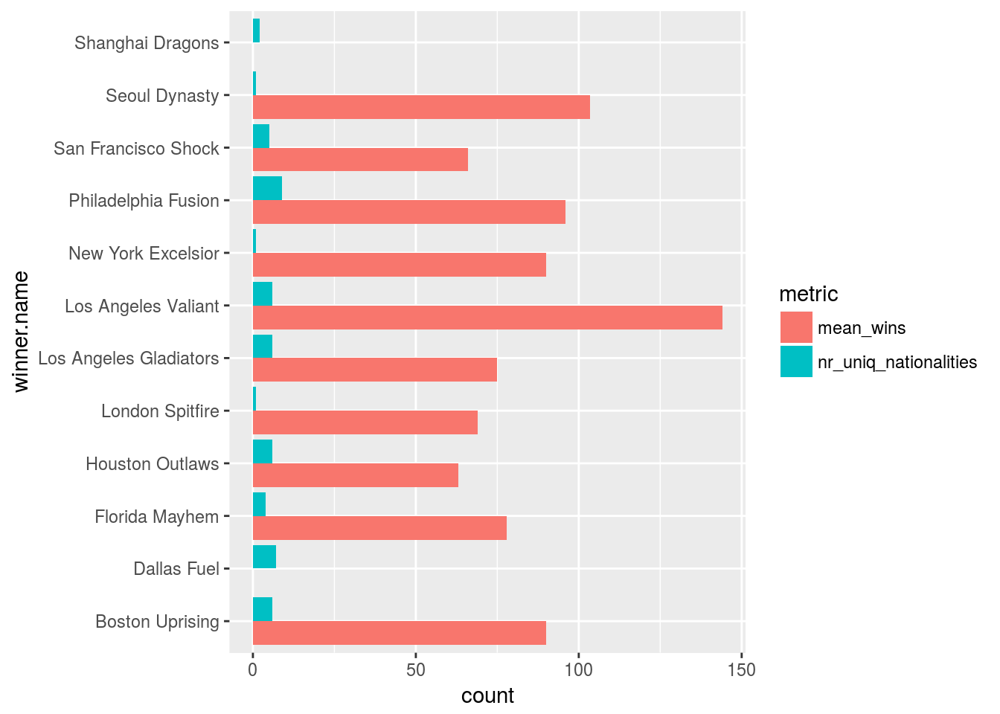
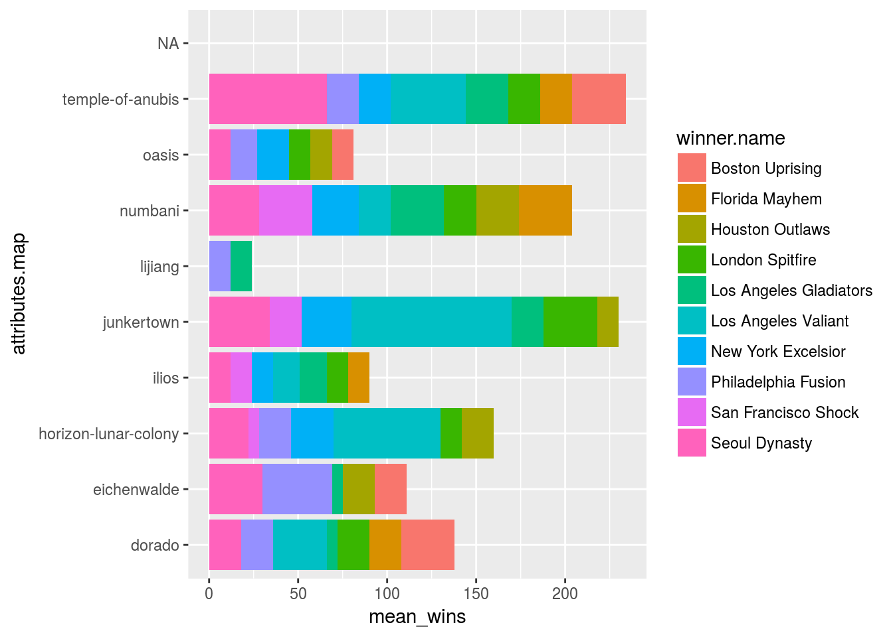

Dealing with nested data
Dealing with nested data can be really frustrating…
Especially if you want to keep your workspace nice and tidy with all your data in tables!
With no actual experience trying to get at these nested tibbles can seem almost impossible:
Downloading data from an api created by Blizzard
To illustrate how you would deal with nested data I found an api that let’s you download all kinds of data on the e-sport/game called Overwatch. By downloading this game data you could make all kinds of predictions for your fantasy league team etc.
According to a response from the api…
List of api requests possible:
- /rankings - returns current rankings
- /schedule - returns current schedule including past matches
- /matches - Returns all matches
- /matches/:matchID
- /match - Returns all matches
- /match/:matchID - Returns a specific match
- /teams - Returns all teams
- /teams/:TeamID - Returns a specific team
- /news - Returns all news items
- /news/:blogID - Returns a specified news item
- /data/countries - Returns list of countries
- /v2/email - Unsure what this does, but it was in the js
- /live-match - Presumably returns live data for a match?
- /v2/streams - Returns owl stream links
- /maps - Returns list of maps
- /vods - Returns list of vods for prior matches
Get some data…
First we can get some data on the maps played…
data_request <-
httr::GET(url = "https://api.overwatchleague.com/maps")
data_content <-
data_request %>%
httr::content()What is in here?
data_content[[1]] %>%
names## [1] "id" "name" "background" "icon"
## [5] "type" "description" "thumbnail" "map"
## [9] "esportsApiId"Which of these are nested deeper?
data_types <-
as.data.frame(data_content[[1]] %>% map_chr(class)) %>%
setNames("data_type")
data_types## data_type
## id character
## name list
## background character
## icon character
## type character
## description list
## thumbnail character
## map list
## esportsApiId characterowl_map_df <-
fromJSON("https://api.overwatchleague.com/maps", flatten = TRUE) %>%
select(id,type, esportsApiId,everything())
owl_map_df %>%
names## [1] "id" "type" "esportsApiId"
## [4] "background" "icon" "thumbnail"
## [7] "name.en_US" "name.es_MX" "name.pt_BR"
## [10] "name.de_DE" "name.en_GB" "name.es_ES"
## [13] "name.fr_FR" "name.it_IT" "name.pl_PL"
## [16] "name.ru_RU" "name.ko_KR" "name.zh_TW"
## [19] "name.zh_CN" "name.ja_JP" "description.en_US"
## [22] "description.es_MX" "description.pt_BR" "description.de_DE"
## [25] "description.en_GB" "description.es_ES" "description.fr_FR"
## [28] "description.it_IT" "description.pl_PL" "description.ru_RU"
## [31] "description.ko_KR" "description.zh_TW" "description.zh_CN"
## [34] "description.ja_JP" "map.href"This wasn’t too bad… Let’s get some teams!!
Teams?
Can we also build a lookup table for teams?
What does the staging response look like?
owl_teams_df <-
fromJSON("https://api.overwatchleague.com/teams", flatten = TRUE)
owl_teams_df %>%
names## [1] "id" "availableLanguages" "name"
## [4] "description" "competitors" "game"
## [7] "logo" "owl_divisions" "strings"Let’s clean this
First we do the teams:
teams_cleaned_df <-
owl_teams_df$competitors %>%
select(competitor.name,competitor.id,competitor.handle,competitor.abbreviatedName) %>%
tbl_df()
teams_cleaned_df## # A tibble: 12 x 4
## competitor.name competitor.id competitor.handle competitor.abbr…
## * <chr> <int> <chr> <chr>
## 1 Dallas Fuel 4523 fuel.6990 DAL
## 2 Philadelphia Fusion 4524 fusion.2056 PHI
## 3 Houston Outlaws 4525 houston.4749 HOU
## 4 Boston Uprising 4402 boston.8698 BOS
## 5 New York Excelsior 4403 new-york-city.16… NYE
## 6 San Francisco Shock 4404 san-francisco.38… SFS
## 7 Los Angeles Valiant 4405 los-angeles-a.27… VAL
## 8 Los Angeles Gladiators 4406 los-angeles-b.38… GLA
## 9 Florida Mayhem 4407 miami-orlando.68… FLA
## 10 Shanghai Dragons 4408 shanghai.1319 SHD
## 11 Seoul Dynasty 4409 seoul.1029 SEO
## 12 London Spitfire 4410 london.6950 LDNAnd now the players!
players_cleaned_df <-
owl_teams_df$competitors$competitor.players %>%
map(~.x %>% select(player.id,team.id,player.availableLanguages,player.handle,player.name,player.homeLocation,player.familyName,player.nationality,player.attributes.heroes,player.attributes.player_number,player.attributes.role)) %>%
reduce(bind_rows) %>%
tbl_df()
players_cleaned_df %>% glimpse## Observations: 126
## Variables: 11
## $ player.id <int> 3660, 3985, 4658, 5717, 3380, ...
## $ team.id <int> 4523, 4523, 4523, 4523, 4523, ...
## $ player.availableLanguages <list> ["en", "en", <"en", "ko">, "e...
## $ player.handle <chr> "harryhook.5132", "akm.8009", ...
## $ player.name <chr> "HarryHook", "aKm", "Rascal", ...
## $ player.homeLocation <chr> "Asturias", "Angoulême", "Seou...
## $ player.familyName <chr> "Tejedor Rua", "Bignet", "Kim"...
## $ player.nationality <chr> "ES", "FR", "KR", "KR", "FI", ...
## $ player.attributes.heroes <list> [<"lucio", "soldier-76", "zen...
## $ player.attributes.player_number <int> 9, 5, 27, 2, 13, 10, 4, 7, 23,...
## $ player.attributes.role <chr> "support", "offense", "offense...So with the players we do have some nested fields but these are just vectors…
For now we will do 2 things;
1. We will keep the nested fields because we could unnest and invert the data to uncover relationships between character preferences and win rates for example…
2. We will create 2 new fields to describe these nested fields.
players_cleaned_df %<>%
mutate(player.nr_of_languages = player.availableLanguages %>% map_int(length)) %>%
mutate(player.nr_of_heros = player.attributes.heroes %>% map_int(length))
players_cleaned_df %>%
select(player.id,player.nr_of_languages,player.nr_of_heros)## # A tibble: 126 x 3
## player.id player.nr_of_languages player.nr_of_heros
## <int> <int> <int>
## 1 3660 1 3
## 2 3985 1 2
## 3 4658 2 3
## 4 5717 1 2
## 5 3380 1 3
## 6 3577 1 3
## 7 4125 1 3
## 8 3969 1 3
## 9 4608 1 3
## 10 4618 1 3
## # ... with 116 more rowsOK great! Now we have some player and team data, let’s start by joining these to get ready for the join to matches played and their results…
Does the ids match?
players_cleaned_df$team.id %in% teams_cleaned_df$competitor.id %>% any()## [1] TRUEYes, so we can join on this:
players_cleaned_df <-
players_cleaned_df %>%
left_join(teams_cleaned_df, by = c("team.id" = "competitor.id"))
players_cleaned_df %>%
glimpse## Observations: 126
## Variables: 16
## $ player.id <int> 3660, 3985, 4658, 5717, 3380, ...
## $ team.id <int> 4523, 4523, 4523, 4523, 4523, ...
## $ player.availableLanguages <list> ["en", "en", <"en", "ko">, "e...
## $ player.handle <chr> "harryhook.5132", "akm.8009", ...
## $ player.name <chr> "HarryHook", "aKm", "Rascal", ...
## $ player.homeLocation <chr> "Asturias", "Angoulême", "Seou...
## $ player.familyName <chr> "Tejedor Rua", "Bignet", "Kim"...
## $ player.nationality <chr> "ES", "FR", "KR", "KR", "FI", ...
## $ player.attributes.heroes <list> [<"lucio", "soldier-76", "zen...
## $ player.attributes.player_number <int> 9, 5, 27, 2, 13, 10, 4, 7, 23,...
## $ player.attributes.role <chr> "support", "offense", "offense...
## $ player.nr_of_languages <int> 1, 1, 2, 1, 1, 1, 1, 1, 1, 1, ...
## $ player.nr_of_heros <int> 3, 2, 3, 2, 3, 3, 3, 3, 3, 3, ...
## $ competitor.name <chr> "Dallas Fuel", "Dallas Fuel", ...
## $ competitor.handle <chr> "fuel.6990", "fuel.6990", "fue...
## $ competitor.abbreviatedName <chr> "DAL", "DAL", "DAL", "DAL", "D...Seems like we have a complete dataset on teams and their players with some usefull features describing them.
Now we need to get some actual match data!
Get some matches
owl_matches_df <-
fromJSON("https://api.overwatchleague.com/matches", flatten = TRUE)
owl_matches_df %>%
names## [1] "content" "totalPages" "totalElements"
## [4] "last" "numberOfElements" "size"
## [7] "number" "sort" "first"Huh… Well, contents is a deep structure; let’s go scavenging for easter eggs
owl_matches_df$content %>%
names## [1] "id"
## [2] "competitors"
## [3] "scores"
## [4] "conclusionValue"
## [5] "conclusionStrategy"
## [6] "state"
## [7] "games"
## [8] "clientHints"
## [9] "dateCreated"
## [10] "flags"
## [11] "handle"
## [12] "startDate"
## [13] "endDate"
## [14] "showStartTime"
## [15] "showEndTime"
## [16] "winner.id"
## [17] "winner.availableLanguages"
## [18] "winner.handle"
## [19] "winner.name"
## [20] "winner.homeLocation"
## [21] "winner.primaryColor"
## [22] "winner.secondaryColor"
## [23] "winner.game"
## [24] "winner.attributesVersion"
## [25] "winner.abbreviatedName"
## [26] "winner.addressCountry"
## [27] "winner.logo"
## [28] "winner.icon"
## [29] "winner.players"
## [30] "winner.secondaryPhoto"
## [31] "winner.type"
## [32] "winner.attributes.city"
## [33] "winner.attributes.hero_image"
## [34] "winner.attributes.manager"
## [35] "winner.attributes.team_guid"
## [36] "bracket.id"
## [37] "bracket.matchConclusionValue"
## [38] "bracket.matchConclusionStrategy"
## [39] "bracket.winners"
## [40] "bracket.teamSize"
## [41] "bracket.repeatableMatchUps"
## [42] "bracket.type"
## [43] "bracket.clientHints"
## [44] "bracket.advantageComparing"
## [45] "bracket.thirdPlaceMatch"
## [46] "bracket.allowDraw"
## [47] "bracket.stage.id"
## [48] "bracket.stage.availableLanguages"
## [49] "bracket.stage.title"
## [50] "bracket.stage.tournament.id"
## [51] "bracket.stage.tournament.availableLanguages"
## [52] "bracket.stage.tournament.game"
## [53] "bracket.stage.tournament.location"
## [54] "bracket.stage.tournament.featured"
## [55] "bracket.stage.tournament.draft"
## [56] "bracket.stage.tournament.handle"
## [57] "bracket.stage.tournament.title"
## [58] "bracket.stage.tournament.attributesVersion"
## [59] "bracket.stage.tournament.subEvents"
## [60] "bracket.stage.tournament.attributes.program.environment"
## [61] "bracket.stage.tournament.attributes.program.phase"
## [62] "bracket.stage.tournament.attributes.program.season_id"
## [63] "bracket.stage.tournament.attributes.program.type"
## [64] "bracket.stage.tournament.attributes.program.stage.format"
## [65] "bracket.stage.tournament.attributes.program.stage.number"
## [66] "bracket.stage.tournament.series.id"OK, so this was also a json but the nifty json package has flattened some of these nested results into columns.
What types of columns do we have left?
owl_matches_df$content %>%
map_chr(class) %>%
data.frame() %>%
setNames("var_type")## var_type
## id integer
## competitors list
## scores list
## conclusionValue integer
## conclusionStrategy character
## state character
## games list
## clientHints list
## dateCreated numeric
## flags list
## handle character
## startDate numeric
## endDate numeric
## showStartTime logical
## showEndTime logical
## winner.id integer
## winner.availableLanguages list
## winner.handle character
## winner.name character
## winner.homeLocation character
## winner.primaryColor character
## winner.secondaryColor character
## winner.game character
## winner.attributesVersion character
## winner.abbreviatedName character
## winner.addressCountry character
## winner.logo character
## winner.icon character
## winner.players list
## winner.secondaryPhoto character
## winner.type character
## winner.attributes.city character
## winner.attributes.hero_image logical
## winner.attributes.manager logical
## winner.attributes.team_guid character
## bracket.id integer
## bracket.matchConclusionValue integer
## bracket.matchConclusionStrategy character
## bracket.winners integer
## bracket.teamSize integer
## bracket.repeatableMatchUps integer
## bracket.type character
## bracket.clientHints list
## bracket.advantageComparing character
## bracket.thirdPlaceMatch logical
## bracket.allowDraw logical
## bracket.stage.id integer
## bracket.stage.availableLanguages list
## bracket.stage.title character
## bracket.stage.tournament.id integer
## bracket.stage.tournament.availableLanguages list
## bracket.stage.tournament.game character
## bracket.stage.tournament.location character
## bracket.stage.tournament.featured logical
## bracket.stage.tournament.draft logical
## bracket.stage.tournament.handle character
## bracket.stage.tournament.title character
## bracket.stage.tournament.attributesVersion character
## bracket.stage.tournament.subEvents list
## bracket.stage.tournament.attributes.program.environment character
## bracket.stage.tournament.attributes.program.phase character
## bracket.stage.tournament.attributes.program.season_id character
## bracket.stage.tournament.attributes.program.type character
## bracket.stage.tournament.attributes.program.stage.format character
## bracket.stage.tournament.attributes.program.stage.number integer
## bracket.stage.tournament.series.id integerSeems as though the rabit hole goes all the way down…
Many of these features have sub lists and in them sub dataframes…
owl_matches_df$content$scores[[1]]## value
## 1 0
## 2 4Scores can be unnested from here and joined to an id
owl_matches_df$content$competitors[[1]]$id## [1] 4404 4405It would seem as though the players field contains all the players, not just the players that played since the game is a 6 player first person shooter:
owl_matches_df$content$competitors[[1]]$players## [[1]]
## flags team.id team.type player.id player.availableLanguages
## 1 NULL 4404 TEAM 5716 en
## 2 NULL 4404 TEAM 4025 en
## 3 NULL 4404 TEAM 4490 en
## 4 NULL 4404 TEAM 4491 en
## 5 NULL 4404 TEAM 4139 en
## 6 NULL 4404 TEAM 4488 en
## 7 NULL 4404 TEAM 4489 en
## 8 NULL 4404 TEAM 4492 en
## 9 NULL 4404 TEAM 3661 en
## 10 NULL 4404 TEAM 4626 en
## 11 NULL 4404 TEAM 5715 en
## player.handle player.name player.homeLocation player.game
## 1 moth.3967 Moth Worcester, MA OVERWATCH
## 2 dhak.8567 dhaK Gijón OVERWATCH
## 3 super.6832 super Philadelphia OVERWATCH
## 4 babybay.7271 BABYBAY Chicago, IL OVERWATCH
## 5 sinatraa.3257 sinatraa Shoreline, WA OVERWATCH
## 6 leepy.5762 sleepy Lakeland, FL OVERWATCH
## 7 danteh.8452 Danteh Chicago, IL OVERWATCH
## 8 nomy.1216 Nomy Tijuana OVERWATCH
## 9 iddqd.9839 iddqd Stockholm OVERWATCH
## 10 nevix.5457 Nevix Helgenäs OVERWATCH
## 11 architect.5497 Architect Seoul OVERWATCH
## player.attributesVersion player.familyName player.givenName
## 1 1.0.0 Espe Grant
## 2 1.0.0 Martinez Paz Daniel
## 3 1.0.0 DeLisi Matthew
## 4 1.0.0 Francisty Andrej
## 5 1.0.0 Won Jay
## 6 1.0.0 Andrews Nikola
## 7 1.0.0 Cruz Dante
## 8 1.0.0 Lizarraga Ramirez Osmar David
## 9 1.0.0 Dahlström André
## 10 1.0.0 Karlsson Andreas
## 11 1.0.0 Park Minho
## player.nationality
## 1 US
## 2 ES
## 3 US
## 4 US
## 5 US
## 6 US
## 7 US
## 8 MX
## 9 SE
## 10 SE
## 11 KR
## player.headshot
## 1 https://bnetcmsus-a.akamaihd.net/cms/page_media/5z/5Z2WUOHSFSBX1521590864746.png
## 2 https://bnetcmsus-a.akamaihd.net/cms/page_media/4Q3H9T4BPAR21512777246918.png
## 3 https://bnetcmsus-a.akamaihd.net/cms/page_media/YUQL4VLXE7PX1512777247831.png
## 4 https://bnetcmsus-a.akamaihd.net/cms/page_media/U9QK0OYK87F01512777246945.png
## 5 https://bnetcmsus-a.akamaihd.net/cms/page_media/GAH625QTQPGC1512777247784.png
## 6 https://bnetcmsus-a.akamaihd.net/cms/page_media/YWYMSL7EOA951512777247847.png
## 7 https://bnetcmsus-a.akamaihd.net/cms/page_media/FD9N9OR9YO7L1512777246926.png
## 8 https://bnetcmsus-a.akamaihd.net/cms/page_media/NFY3Y5MRRO951512777247574.png
## 9 https://bnetcmsus-a.akamaihd.net/cms/page_media/WSFQZ1R6LCJ31512777247534.png
## 10 https://bnetcmsus-a.akamaihd.net/cms/page_media/QCO0N7H8SQFT1512777247525.png
## 11 https://bnetcmsus-a.akamaihd.net/cms/page_media/S02042JXNHF81515718127993.png
## player.type player.attributes.heroes player.attributes.player_number
## 1 PLAYER ana, lucio, mercy 64
## 2 PLAYER lucio, mercy, ana 10
## 3 PLAYER pharah, roadhog 1
## 4 PLAYER soldier-76, mccree, genji 13
## 5 PLAYER tracer, zarya, genji 2
## 6 PLAYER ana, zenyatta, mercy 27
## 7 PLAYER tracer, genji, sombra 6
## 8 PLAYER winston, reinhardt 7
## 9 PLAYER tracer, soldier-76, mccree 66
## 10 PLAYER dva, pharah, junkrat 9
## 11 PLAYER genji, pharah 3
## player.attributes.preferred_slot player.attributes.role
## 1 4 support
## 2 4 support
## 3 2 flex
## 4 0 offense
## 5 0 offense
## 6 5 support
## 7 3 offense
## 8 1 tank
## 9 0 offense
## 10 2 flex
## 11 <NA> offense
## player.attributes.hero_image player.attributes.hometown
## 1 NA <NA>
## 2 NA Gijón, Spain
## 3 NA Philadelphia, Pennsylvania
## 4 NA Chicago, Illionis
## 5 NA Shoreline, Washington
## 6 NA Lakeland, Flordia
## 7 NA Wonder Lake, illinois
## 8 NA Tijuana, Mexico
## 9 NA Stockholm, Sweden
## 10 NA Helgenäs , Sweden
## 11 NA <NA>
##
## [[2]]
## flags team.id team.type player.id player.availableLanguages
## 1 NULL 4405 TEAM 4632 en
## 2 NULL 4405 TEAM 4630 en
## 3 NULL 4405 TEAM 4635 en, ko
## 4 NULL 4405 TEAM 4636 en, ko
## 5 NULL 4405 TEAM 4633 en
## 6 NULL 4405 TEAM 4634 en, ko
## 7 NULL 4405 TEAM 4637 en
## 8 NULL 4405 TEAM 3663 en
## 9 NULL 4405 TEAM 3983 en
## 10 NULL 4405 TEAM 4142 en
## 11 NULL 4405 TEAM 3987 en
## player.handle player.name player.homeLocation player.game
## 1 silkthread.9968 Silkthread Katy, TX OVERWATCH
## 2 grimreality.4793 Grimreality Chico, CA OVERWATCH
## 3 kariv.3355 Kariv Seoul OVERWATCH
## 4 fate.1459 Fate Seoul OVERWATCH
## 5 verbo.6137 Verbo Toronto OVERWATCH
## 6 envy.3537 Envy Seoul OVERWATCH
## 7 space.7513 Space New York City, NY OVERWATCH
## 8 numlocked.8944 Numlocked Leamington Spa OVERWATCH
## 9 unkoe.9342 Unkoe Nevers OVERWATCH
## 10 agilities.5443 Agilities Blairmore OVERWATCH
## 11 soon.8087 Soon Hangest-En-Santerre OVERWATCH
## player.attributesVersion player.familyName player.givenName
## 1 1.0.0 Wang Ted
## 2 1.0.0 Schaefer Christopher
## 3 1.0.0 Bak Young-Seo
## 4 1.0.0 Koo Pan-Seung
## 5 1.0.0 Disalvo Stefano
## 6 1.0.0 Lee Kang-Jae
## 7 1.0.0 Halpern Indy
## 8 1.0.0 Barton Sebastian
## 9 1.0.0 Chevasson Benjamin
## 10 1.0.0 Girardi Brady
## 11 1.0.0 Tarlier Terence
## player.nationality
## 1 US
## 2 US
## 3 KR
## 4 KR
## 5 CA
## 6 KR
## 7 US
## 8 GB
## 9 FR
## 10 CA
## 11 FR
## player.headshot
## 1 https://bnetcmsus-a.akamaihd.net/cms/page_media/WZ8MLSBXCD6E1512776701242.png
## 2 https://bnetcmsus-a.akamaihd.net/cms/page_media/4HL7NR9URCMU1512776701054.png
## 3 https://bnetcmsus-a.akamaihd.net/cms/page_media/6QOV26CVECXE1512776701055.png
## 4 https://bnetcmsus-a.akamaihd.net/cms/page_media/3SWJQYWMYTV11512776700780.png
## 5 https://bnetcmsus-a.akamaihd.net/cms/page_media/GB1BRHQZ4CLL1512776701508.png
## 6 https://bnetcmsus-a.akamaihd.net/cms/page_media/6FAQKR0XRZ821512776700785.png
## 7 https://bnetcmsus-a.akamaihd.net/cms/page_media/BP0XDXDMWZ421512776701354.png
## 8 https://bnetcmsus-a.akamaihd.net/cms/page_media/H4XYM23GR1061512776701073.png
## 9 https://bnetcmsus-a.akamaihd.net/cms/page_media/AAKTVQLMQ0IZ1512776701428.png
## 10 https://bnetcmsus-a.akamaihd.net/cms/page_media/47PKEMP7FWAQ1512776700755.png
## 11 https://bnetcmsus-a.akamaihd.net/cms/page_media/E29MO86JEHJD1512776701352.png
## player.type player.attributes.hero_image player.attributes.heroes
## 1 PLAYER NA tracer, genji, mccree
## 2 PLAYER NA tracer, mccree, soldier-76
## 3 PLAYER NA zenyatta, ana, widowmaker
## 4 PLAYER NA winston, reinhardt, tracer
## 5 PLAYER NA lucio, mercy, ana
## 6 PLAYER NA dva, zarya, roadhog
## 7 PLAYER NA zarya, roadhog, dva
## 8 PLAYER NA winston, reinhardt, dva
## 9 PLAYER NA mercy, zenyatta, ana
## 10 PLAYER NA genji, tracer, pharah
## 11 PLAYER NA tracer, widowmaker, mccree
## player.attributes.hometown player.attributes.player_number
## 1 Katy, TX 9
## 2 Chico, CA 0
## 3 Seoul 7
## 4 Seoul 1
## 5 Toronto 13
## 6 Seoul 10
## 7 New York City, New York 16
## 8 Leamington Spa 6
## 9 Nevers, France 24
## 10 Blairmore, AB 3
## 11 Hangest-En-Santerre, France 99
## player.attributes.preferred_slot player.attributes.role
## 1 3 offense
## 2 3 offense
## 3 1 support
## 4 0 tank
## 5 4 support
## 6 2 flex
## 7 <NA> flex
## 8 0 tank
## 9 5 support
## 10 3 offense
## 11 1 offenseWe can see if the match has been played:
owl_matches_df$content$state## [1] "CONCLUDED" "CONCLUDED" "CONCLUDED" "CONCLUDED" "CONCLUDED"
## [6] "CONCLUDED" "CONCLUDED" "CONCLUDED" "CONCLUDED" "CONCLUDED"
## [11] "CONCLUDED" "CONCLUDED" "CONCLUDED" "CONCLUDED" "CONCLUDED"
## [16] "CONCLUDED" "CONCLUDED" "CONCLUDED" "CONCLUDED" "CONCLUDED"At this point we can create an initial frame for each of the overall matchups:
matches_cleaned_df <-
owl_matches_df$content %>%
select(id,competitors,scores,state,endDate,winner.name,bracket.id) %>%
dplyr::rename(match_id = id) %>%
mutate(competitors = competitors %>% map(~.x %>% select(id)))
matches_cleaned_df## match_id competitors scores state endDate
## 1 10223 4404, 4405 0, 4 CONCLUDED 1.515636e+12
## 2 10224 4408, 4406 0, 4 CONCLUDED 1.515641e+12
## 3 10225 4523, 4409 1, 2 CONCLUDED 1.515650e+12
## 4 10226 4410, 4407 3, 1 CONCLUDED 1.515714e+12
## 5 10227 4524, 4525 3, 2 CONCLUDED 1.515721e+12
## 6 10228 4402, 4403 1, 3 CONCLUDED 1.515728e+12
## 7 10229 4405, 4523 3, 0 CONCLUDED 1.515810e+12
## 8 10230 4407, 4402 0, 4 CONCLUDED 1.515816e+12
## 9 10231 4404, 4408 3, 1 CONCLUDED 1.515823e+12
## 10 10232 4410, 4524 4, 0 CONCLUDED 1.515876e+12
## 11 10233 4403, 4525 3, 1 CONCLUDED 1.515883e+12
## 12 10234 4409, 4406 4, 0 CONCLUDED 1.515891e+12
## 13 10235 4404, 4524 1, 2 CONCLUDED 1.516240e+12
## 14 10236 4407, 4409 0, 4 CONCLUDED 1.516247e+12
## 15 10237 4525, 4408 4, 0 CONCLUDED 1.516253e+12
## 16 10238 4523, 4525 0, 4 CONCLUDED 1.516318e+12
## 17 10239 4403, 4405 3, 0 CONCLUDED 1.516327e+12
## 18 10240 4524, 4406 2, 3 CONCLUDED 1.516335e+12
## 19 10241 4409, 4402 4, 0 CONCLUDED 1.516413e+12
## 20 10242 4408, 4407 0, 4 CONCLUDED 1.516419e+12
## winner.name bracket.id
## 1 Los Angeles Valiant 2725
## 2 Los Angeles Gladiators 2725
## 3 Seoul Dynasty 2725
## 4 London Spitfire 2725
## 5 Philadelphia Fusion 2725
## 6 New York Excelsior 2725
## 7 Los Angeles Valiant 2725
## 8 Boston Uprising 2725
## 9 San Francisco Shock 2725
## 10 London Spitfire 2725
## 11 New York Excelsior 2725
## 12 Seoul Dynasty 2725
## 13 Philadelphia Fusion 2725
## 14 Seoul Dynasty 2725
## 15 Houston Outlaws 2725
## 16 Houston Outlaws 2725
## 17 New York Excelsior 2725
## 18 Los Angeles Gladiators 2725
## 19 Seoul Dynasty 2725
## 20 Florida Mayhem 2725The only problem here is that we have to columns with data frames in them so let’s fix that
One way of tidying this is to throw them together by mapping a bind_cols function over them and that allows us to use unnest to go into long format. Think of it as a reduce into another bind_cols
matches_cleaned_df %<>%
mutate(match_outcome = pmap(matches_cleaned_df,~bind_cols(..2,..3))) %>%
select(-competitors,-scores) %>%
unnest() %>%
dplyr::rename(team.id = id, match_score = value)
# mutate(match_outcome = list(competitors,scores) %>% reduce(bind_cols) %>% list())Inside each of these matches there are games. This is because the match is decided by the team that wins the most of the rounds of games.
owl_matches_df$content$games[[1]] %>%
names## [1] "id" "number"
## [3] "points" "attributesVersion"
## [5] "players" "state"
## [7] "stats" "handle"
## [9] "attributes.instanceID" "attributes.map"
## [11] "attributes.mapScore.team1" "attributes.mapScore.team2"Seems like some useful info here.
owl_matches_df$content$games[[1]] %>%
map_chr(class) %>%
data.frame() %>%
setNames("var_type")## var_type
## id integer
## number integer
## points list
## attributesVersion character
## players list
## state character
## stats logical
## handle character
## attributes.instanceID character
## attributes.map character
## attributes.mapScore.team1 integer
## attributes.mapScore.team2 integerIt seems as though we can drop a lot of these columns already. And we can wrangle the data so that it is also on a team level not a game level.
Furthermore; the list of players another level down shows only the players that played. This is crucial! This means we can join player info onto this list and record statistics only when a player plays a game…
Another key insight here is that the order these lists were arranged in is team1 first and then team2 second. I guess to normalize the data structure these teams were not named in the games sub data frames.
games_cleaned_df <-
owl_matches_df$content %>%
select(id,games) %>%
dplyr::rename(match_id = id) %>%
mutate(games = games %>% map(~.x %>%
select(
id,
number,
attributes.map,
attributes.mapScore.team1,
attributes.mapScore.team2,
players
) %>%
tidyr::gather(
key = "team_tag",
value = "team_score",
attributes.mapScore.team1,
attributes.mapScore.team2
) %>%
dplyr::rename(game_id = id, game_number = number)
)) %>%
unnest() %>%
mutate(players = players %>% map(~.x %>% select(team.id,player.id,player.name))) %>%
unnest() %>%
tbl_df()
games_cleaned_df %>% glimpse## Observations: 1,968
## Variables: 9
## $ match_id <int> 10223, 10223, 10223, 10223, 10223, 10223, 10223...
## $ game_id <int> 5599, 5599, 5599, 5599, 5599, 5599, 5599, 5599,...
## $ game_number <int> 1, 1, 1, 1, 1, 1, 1, 1, 1, 1, 1, 1, 2, 2, 2, 2,...
## $ attributes.map <chr> "dorado", "dorado", "dorado", "dorado", "dorado...
## $ team_tag <chr> "attributes.mapScore.team1", "attributes.mapSco...
## $ team_score <int> 2, 2, 2, 2, 2, 2, 2, 2, 2, 2, 2, 2, 3, 3, 3, 3,...
## $ team.id <int> 4405, 4404, 4405, 4404, 4404, 4404, 4404, 4404,...
## $ player.id <int> 3983, 4025, 4142, 4488, 4489, 4491, 4492, 4626,...
## $ player.name <chr> "Unkoe", "dhaK", "Agilities", "sleepy", "Danteh...Unfortunately the api did not include a clear mapping from games to teams for score. One would have to figure out how to join them or realize that the “team1” was always ontop in the matches hierarchy.
Even more disappointing is the fact that the players have no juicy data in here like kills or assists etc.
If this was available one could immediately start joining these tables and train some machine learning models to predict wins, hero picks, find factors associated with winning etc.
Visualize some data!
Nationality of the players
players_cleaned_df %>%
ggplot(aes(x = player.nationality))+
geom_bar(aes(fill = player.nationality))
nationality by team counting number of players
players_cleaned_df %>%
ggplot(aes(x = competitor.name,group = player.nationality))+
geom_bar(aes(fill = player.nationality))+
coord_flip()
Any correlation between average number of game wins and number of nationalities in a team?
# matches_cleaned_df %>%
games_cleaned_df %>%
group_by(match_id,team.id) %>%
summarise(team_score = sum(team_score,na.rm = TRUE)) %>%
right_join(matches_cleaned_df) %>%
# group_by(match_id, winner.name) %>%
# summarise(nr_wins = max(match_score)) %>%
right_join(players_cleaned_df, by = c("winner.name" = "competitor.name")) %>%
group_by(winner.name) %>%
mutate(nr_uniq_nationalities = unique(player.nationality) %>% length) %>%
summarise(mean_wins = mean(team_score,na.rm = TRUE),
nr_uniq_nationalities = mean(nr_uniq_nationalities,na.rm = TRUE)) %>%
# players_cleaned_df %>%
gather(key = "metric", value = "count",nr_uniq_nationalities,mean_wins) %>%
ggplot(aes(x = winner.name, y = count, group = metric, fill = metric))+
geom_bar(stat = "identity", position = "dodge")+
coord_flip()## Joining, by = c("match_id", "team.id")## Warning: Removed 2 rows containing missing values (geom_bar).
Any correlation between average number of game wins and the map being played?
# matches_cleaned_df %>%
games_cleaned_df %>%
group_by(match_id,team.id,attributes.map) %>%
summarise(team_score = sum(team_score,na.rm = TRUE)) %>%
left_join(matches_cleaned_df) %>%
# group_by(match_id, winner.name) %>%
# summarise(nr_wins = max(match_score)) %>%
right_join(players_cleaned_df, by = c("winner.name" = "competitor.name")) %>%
group_by(winner.name,attributes.map) %>%
mutate(nr_uniq_nationalities = unique(player.nationality) %>% length) %>%
summarise(mean_wins = mean(team_score,na.rm = TRUE),
nr_uniq_nationalities = mean(nr_uniq_nationalities,na.rm = TRUE)) %>%
# players_cleaned_df %>%
ggplot(aes(x = attributes.map, y = mean_wins, group = winner.name, fill = winner.name))+
geom_bar(stat = "identity")+
coord_flip()## Joining, by = c("match_id", "team.id")## Warning: Removed 2 rows containing missing values (position_stack).